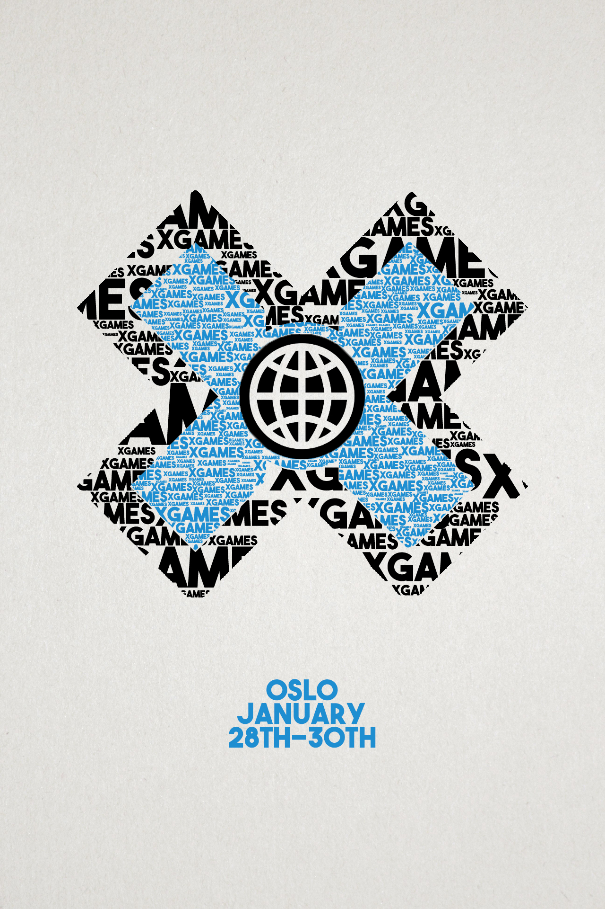
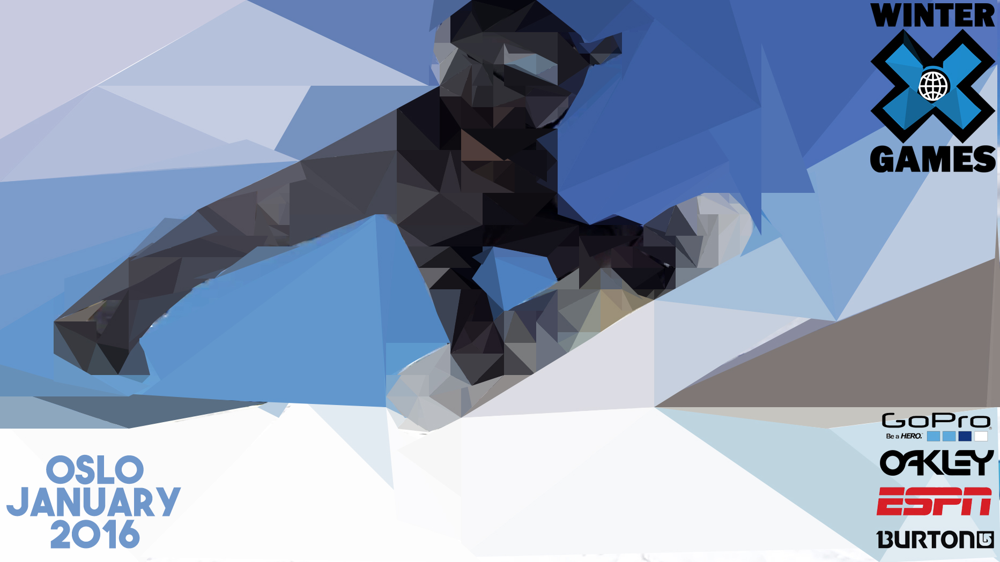

We were set the task to create 3 posters, which were inspired on a sporting event. I chose the Winter X-Games 2016 in Oslo.
For my first poster, as seen above. I started off by seeing what posters were already around for the X-Games. What their style was and what they have created in the past. I got the idea for this poster from a billboard i drove past. Where the information was another image ontop of a coloured background. It caught my eye straight away and so i changed the design a little bit, switched the image to the background and the colour to the foreground. I created it in photoshop using the Magic wand tool.
I got the inspiration for this poster from one of our kinetic typography project. I used typography to create the X-Games logo.
The inspiration for this poster came from the end of year show, before hand i had an interest in low poly design however, the end of year show put into perspective how much i could do with low-poly.